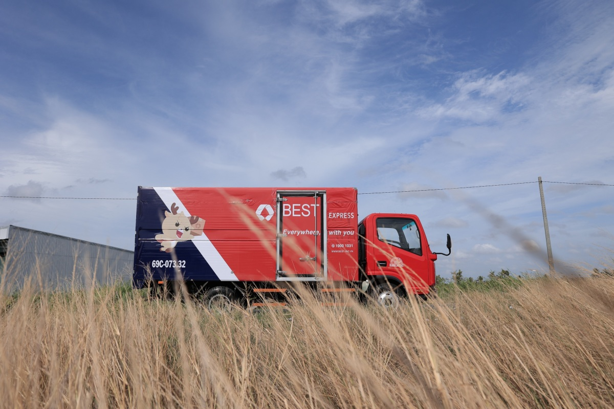

Hành trình nâng bước học sinh nghèo ở cực Nam Tổ quốc
17/03/2022
Chuyến xe “Cơm no đến trường” do BEST Express thực hiện giúp mở ra con đường học vấn cho hàng nghìn trẻ nghèo ĐBSCL, chạm đến những điểm cuối trên dải đất chữ S.
Hành trình “Cơm no đến trường” vừa kết thúc tại An Giang, đội ngũ BEST Express lập tức lên đường đến các điểm hỗ trợ tiếp theo tại Kiên Giang và Cà Mau - điểm cực Nam Tổ quốc, nơi có nhiều trẻ em nghèo hoàn cành khó khăn, cơ cực.
Tại Kiên Giang, đội ngũ BEST cùng Đoàn thành niên Công an tỉnh giúp đỡ những em học sinh các cấp và hộ gia đình khó khăn tại hai xã Vĩnh Thuận và Phong Đông.
Tại đây, đơn vị đã trao tặng hai tấn gạo cho đại diện tỉnh với hy vọng có thể giúp ngày càng nhiều trẻ nghèo có đủ cơm no, áo mặc, thoải mái đến trường, thực hiện ước mơ học vấn. Ở mỗi địa điểm BEST đi qua, quy mô chương trình càng được mở rộng, hỗ trợ thêm nhiều đối tượng cần giúp đỡ.
Từ khi nhận thông tin về chương trình, Đoàn thanh niên Công an tỉnh cũng bắt tay vào khảo sát, kết hợp thêm hoạt động hỗ trợ các hộ dân hoàn cảnh đặc biệt khó khăn tại đây. Theo đó, đối tượng được hỗ trợ hiện không chỉ có học sinh mà còn bao gồm cả người già neo đơn, gia đình khó khăn. Bên cạnh đó, không chỉ nhận gạo, các em học sinh còn được trao dụng cụ học tập, sách vở, xe đạp, tiếp thêm trang bị đến trường. Những hộ nghèo sẽ nhận thêm nhu yếu phẩm.

Các em học sinh đều ăn mặc chỉnh tề, nữ sinh diện áo dài trắng và có mặt từ sớm, chăm chú nghe đại diện BEST cùng Đoàn Công an tỉnh khai mạc buổi lễ, gửi những lời chúc tốt đẹp trong năm học mới.
Những hộ nghèo, khó khăn tại đây ngoài gao sẽ được hỗ trợ thêm nhu yếu phẩm: dầu ăn, mắm, muối… đầy đủ để có thể nấu bữa cơm no.
Bà Danh Thị Cưng, người có trong danh sách hộ nghèo được hỗ trợ trong lần này chia sẻ: “Tôi có hai người con đều bị tật, khó khăn trong sinh hoạt. Một mình bươn chải, làm đủ nghề, rửa chén, cắt cỏ… để mưu sinh, nuôi hai cháu. Gia cảnh khó khăn khiến tôi không đủ khả năng chữa trị cho con, chỉ có thể để chúng ở nhà. Gia đình cũng bữa no, bữa đói vì thu nhập bấp bênh. Thật lòng cảm ơn các anh chị đã cho gạo, thức ăn, để hai con tôi có bữa cơm đầy đủ”.
Ông Trương Văn Quốc (phải), Bí thư Đoàn thanh niên công an tỉnh Kiên Giang trao hoa và thư cảm ơn đến đại diện BEST Express - ông Nguyễn Quốc Việt (giữa).
“Trước những khó khăn của người dân địa phương, chúng tôi vui mừng và chân thành cảm ơn sự hỗ trợ của đơn vị BEST Express. Những phần quà thiết thực này sẽ giúp các hộ dân nơi đây vượt qua khó khăn, nhất là sau một đợt dịch với quá nhiều mất mát. Đồng thời, các em học sinh cũng có động lực, sức khỏe đến trường, học tập thật tốt”, ông Quốc cho biết.
Từ Kiên Giang, đội ngũ BEST tiếp tục di chuyển đến huyện Thới Bình, Cà Mau - tỉnh cực Nam Tổ quốc, tiếp tục sứ mệnh hỗ trợ những hoàn cảnh bất hạnh tại đây.
Những em học sinh và gia đình tại đây đều đang đối mặt với việc thiếu ăn, thiếu mặc, cuộc sống bấp bênh, thất nghiệp sau dịch, khiến ước mơ đến trường càng xa. Trong đó còn có một em 8 tuổi mắc bệnh lạ, vì gia cảnh khó khăn, cha mẹ không có việc làm ổn định, vẫn cố gồng gánh cho em đến trường.
Sáng sớm ngày trao quà, nhân viên BEST Express cùng đối tác nhượng quyền bưu cục Cà Mau và Đoàn thanh niên công an tỉnh đã đến trường tiểu học Hồ Thị Kỷ A khuân vác, sắp xếp từng phần quà trao tặng các em học sinh và gia đình.

“Dù hành trình diễn ra liên tục với lịch dày đặc, nhưng tôi cùng đội ngũ vui vì có thể kịp thời giúp đỡ các em được cơm no, áo ấm đến trường. Từ khi dịch bệnh bùng phát, nhiều gia đình tại đây thất nghiệp kéo dài khiến tỷ lệ đến trường của các em ngày càng thấp. Cơm không đủ no, sao an tâm đến trường. Đội ngũ BEST muốn đóng góp một phần sức lực, giúp các em và gia đình vượt qua giai đoạn khó khăn, học tập thật tốt”, ông Nguyễn Quốc Việt cho hay.

Các em học sinh vui mừng, nâng niu những phần quà nhận từ BEST Express. Em Minh, học sinh trường Hồ Thị Kỷ A chia sẻ: “Em cảm ơn các anh chị đã đến cho em và các bạn nhiều quà. Em sẽ phấn đấu học chăm chỉ hơn để không phụ lòng của mọi người”.
Với đội ngũ nhân viên BEST Express, “giữ cho nụ cười trên gương mặt ngây thơ của các em nhỏ còn mãi” là sứ mệnh họ theo đuổi. Vì lý tưởng đó, những chuyến xe đỏ mang hành trình “Cơm no đến trường” tiếp tục lăn bánh đến mọi miền đất nước vì sự phát triển toàn diện của trẻ em Việt.